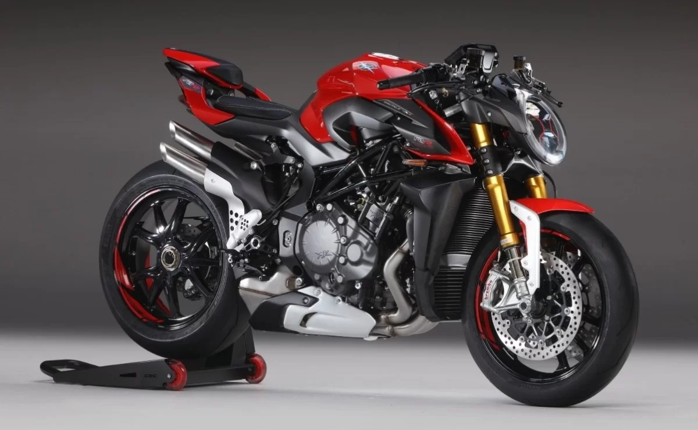
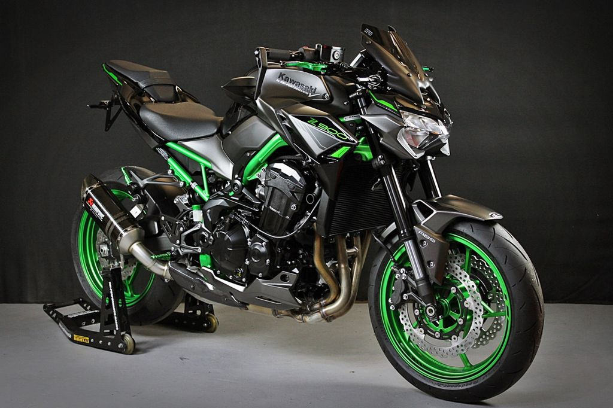
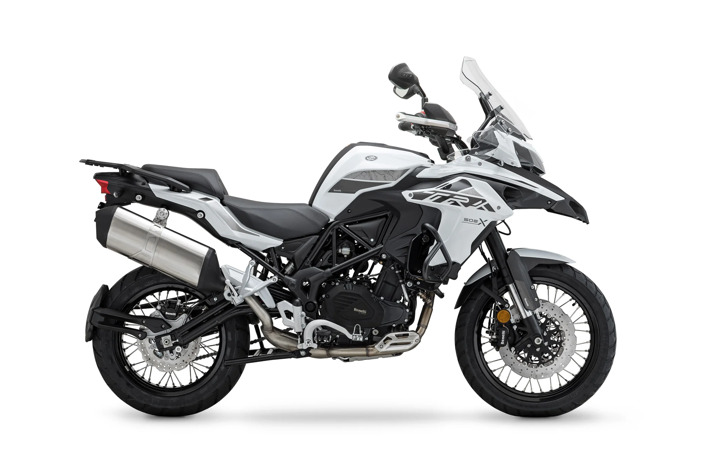
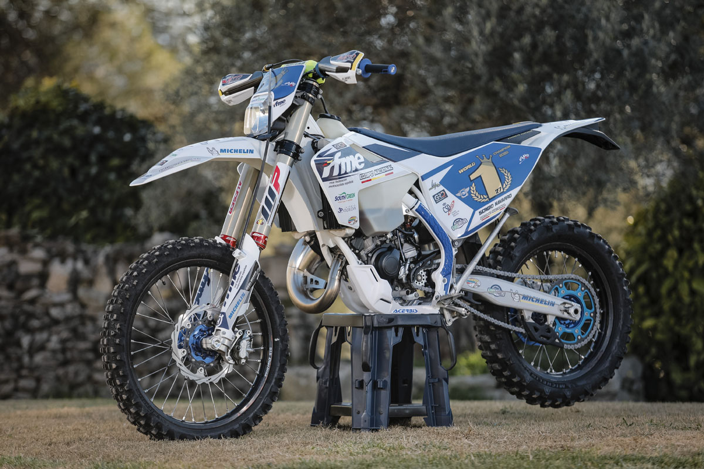
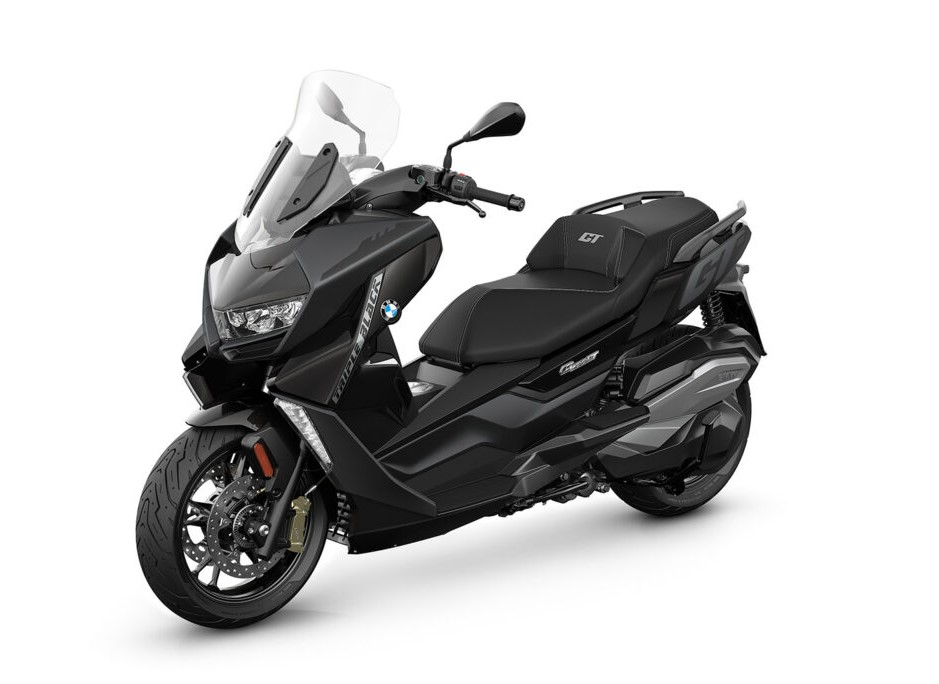

Las deportivas son las motos más conocidas tanto por estilo como por velocidad.
por lo general estas motos son las que más corren y por otra parte son las más incomodas.
Para ser sinceros, estas motos solo tienen un proposito, correr.
Naked
Las motos naked tienen este nombre que traducido significa desnudo,
porque hace referencia a la estetica de la moto, que esta majoritariamente sin cubrir.
Estas motos són elpaso intermedio entre comodidad y velocidad.

Brutale
Naked de Ducati

Z900
La naked más diferenciada
XSR 900
Una naked con un diseño retro pero agresivo
Trail
Las motos trail són las motos más completas de todas. Son las mezcla
de comodidad y todo terreno, son motos polivalentes que te permiten escapar
de la monotonia del asfalto para poder adentrarte en la aventura.

Enduro
Las motos de enduro son exclusivamente para el off road es decir, tierra, piedras y arena.
Son motos especializadas para superar cualquier tipo de obstáculo, rampa o desnivel.

Granturismo
Las motos cruising són motos hechas exclusivamente hechas para hacer largos viajes por
carretera (asfalto)
suelen ser motos muy pesadas y dificiles de manejar en parado.
Scooter
Las scooter son las "motos" de ciudad por excelencia. Son vehiculos diseñados para una movilización
rapida eN ciudad y a la vez tener capacidad de almacenaje debajo del asiento
